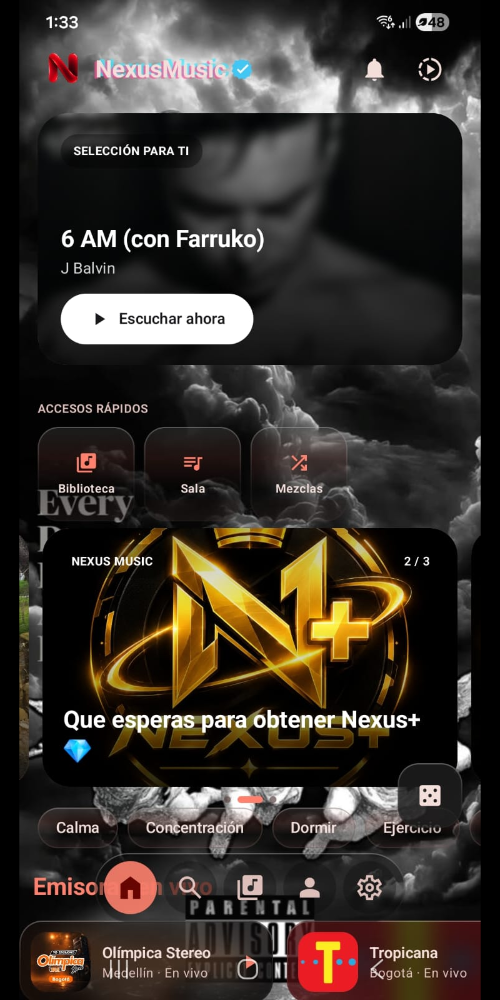
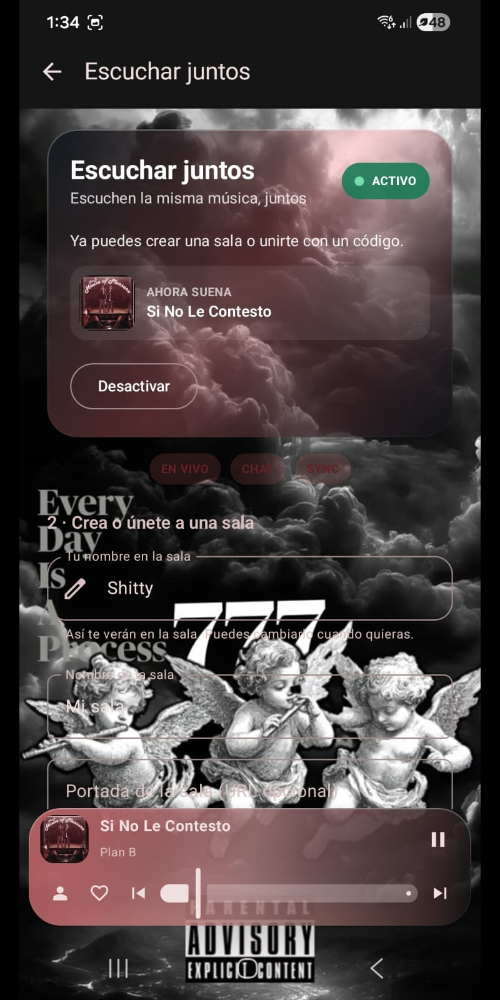

Segundo plano real
Sigue sonando al bloquear el teléfono, cambiar de app o ir manejando, con controles en la pantalla de bloqueo.
Tu música, a tu manera. Explora canciones en la web o lleva NexusMusic contigo en Android.
Busca por artista, canción o ambiente. Tu biblioteca vive en este navegador.
Funciones de la aplicación Android; la web ofrece búsqueda, reproducción y biblioteca local.
Sigue sonando al bloquear el teléfono, cambiar de app o ir manejando, con controles en la pantalla de bloqueo.
Creas una sala, pasas el código y los dos oyen lo mismo al mismo tiempo: pausa, cambia de canción o busca sin salir. Con chat y foto de perfil.
Descarga lo que quieras y escúchalo sin datos ni wifi, con la misma calidad y sin cortes.
Canciones, álbumes, artistas, playlists, estados de ánimo y géneros: lo que ya tienes en YouTube Music, con buscador propio.
Emisoras en vivo y modos como Calma, Concentración o Energía, para cuando no quieres armar tú la lista.
Letra sincronizada cuando existe, con varios proveedores y la opción de bajarla para verla después.
Puedes escuchar sin cuenta de Nexus Forge y no hay rastreadores. Las estadísticas son anónimas y se apagan desde la app cuando quieras. Las funciones con inicio de sesión requieren una cuenta creada primero en Nexus Forge.
Explora las pantallas de la app Android.



Las capturas originales.
NexusMusic Pro es un lanzamiento previsto para el 27 de septiembre de 2027.
Funciones desbloqueadas durante la beta.
La edición completa prevista para Android.
La edición esencial futura.
| Función / Característica | Beta Actual (Hoy) | NexusMusic Pro ($5 USD) | Versión Free (Sept. 2027) |
|---|---|---|---|
| Cero anuncios comerciales | ✓ Sí | ★ Sí (100% libre) | ✓ Sí |
| Reproducción en segundo plano | ✓ Sí (Ilimitada) | ★ Sí (Ilimitada) | ✓ Sí (Estándar) |
| Descargas sin conexión (Offline) | ✓ Sí (Ilimitadas) | ★ Sí (Máxima calidad) | ✕ No disponible |
| Salas Listen Together en tiempo real | ✓ Sí | ★ Sí (Salas HD) | ✕ No disponible |
| Chat en vivo y avatar propio en salas | ✓ Sí | ★ Sí | ✕ No disponible |
| Ecualizador 10 bandas + Pitch / Tempo | ✓ Sí | ★ Sí (Motor DSP Pro) | ✕ No (Básico) |
| Letras sincronizadas con guardado offline | ✓ Sí | ★ Sí (Multiprovedor) | ✕ No (Solo básicas) |
| Sincronización en la nube Nexus Forge | ✓ Sí | ★ Sí (Nube total) | ✓ Sí (Esencial) |
| Temas Liquid Glass y personalización VIP | ✓ Sí | ★ Sí (Acceso VIP) | ✕ No (Tema oscuro base) |
| Precio y disponibilidad | Gratis hoy (Beta) | 5 USD (Pago único) | Gratis siempre |
Personalización avanzada en la app y en la web Nexus Forge: temas exclusivos, iconos, portadas de reproductor y ajustes que no están disponibles de otra forma. No quita ningún anuncio — acá nunca los hubo — es pura personalización.
Explorar Nexus+¿Prefieres no suscribirte? Con Nexus Coins desbloqueas esa misma personalización de a poco, ganándolas o consiguiéndolas dentro del ecosistema de Nexus Forge. Mismo resultado, otro camino.
Explorar Nexus CoinsConsulta las novedades documentadas en la web original.
Las barras de título, la píldora de abajo, los avisos y las hojas son translúcidos: el contenido se adivina por debajo, con un canto de luz y un brillo del color de la portada arriba y abajo. Se apaga en Ajustes → Apariencia si prefieres el negro liso.
Al tocar tu ficha eliges una foto del teléfono y el otro te ve la cara en el círculo de la sala. Se recorta y se encoge antes de salir, no se guarda en ningún servidor y se quita cuando quieras.
Nexus Studios. Propietario. Gracias a todos ustedes por confiar en nosotros y usar a NexusMusic.
Nexus Studios. Propietario. Se agrega login a la plataforma y guardado de música en la nube, más comentarios en las canciones y la opción de suscribirte a los artistas.
El nombre y la identidad de la app cambiaron para reflejar su nuevo hogar en Nexus Forge.
Podés importar tus temas de SoundCloud por URL, y de Spotify iniciando sesión con tu cuenta.
Comparativa histórica del proyecto original; no verificada de forma independiente.
| Función | NexusMusic | YouTube Music (free) | Spotify (free) |
|---|---|---|---|
| Sin anuncios | Sí | No | No |
| Reproducción en segundo plano | Sí | Limitada | Limitada |
| Descargas sin conexión | Sí | Requiere Premium | Requiere Premium |
| Escuchar juntos en tiempo real | Sí | No | No |
| Letras sincronizadas | Sí | Sí | Sí |
| Cuenta obligatoria | No | Sí | Sí |
| Costo | Gratis | Gratis con anuncios | Gratis con anuncios |
| Característica | NexusMusic | OpenYTMusic | Metrolist |
|---|---|---|---|
| Núcleo del reproductor | |||
| Android | Sí | Sí | Sí |
| Cliente de YouTube Music | Sí | Sí | Sí |
| Reproducción en segundo plano | Sí | Sí | Sí |
| Descargas offline | Sí | Sí | Sí |
| Cola / biblioteca | Sí | Sí | Sí |
| Letras sincronizadas | Sí | Sí | Sí |
| Cuenta y nube | |||
| Login propio | Nexus Forge | No | No |
| Login con YouTube Music | Sí | Parcial | Sí |
| Biblioteca en la nube propia | Sí | No | — |
| Sincronización entre dispositivos | Sí, con Nexus | No | Sí, con YTM |
| Comunidad y social | |||
| Comentarios en canciones | Sí | No | No |
| Responder comentarios | Sí | No | No |
| Perfil social | Sí | No | No |
| Seguir artistas dentro de Nexus | Sí | No | No |
| Salas y escucha compartida | |||
| Escuchar juntos (Listen Together) | Sí | Sí | Sí |
| Chat en salas | Sí | Sí | No destacado en su documentación |
| Foto de perfil en la sala | Sí | Sí | No |
| Búsqueda dentro de la sala | Sí | Sí | No |
| Personalización visual | |||
| Temas personalizados | Sí | Sí | Sí |
| Fondo personalizado | Sí | No | No |
| Color dinámico | Sí | Sí | Sí, +19 paletas |
| Motor de audio | |||
| Ecualizador | Sí | No | Sí |
| Control de velocidad / tempo | Sí | No | Sí |
| Control de tono / pitch | Sí | No | Sí |
| Saltar silencios | Sí | No | Sí |
| Normalización de audio | Sí | No | Sí |
| Crossfade | Sí | No | Sí |
| Sleep timer | Sí | No | Sí |
| Extras | |||
| Widget de inicio | Sí | No | Sí |
| Importar playlists | Sí | No | Sí |
| Importar por enlace | Sí | No | Parcial |
| Radio / modos de ánimo | Sí | No | Parcial |
| Importación entre plataformas | |||
| Spotify → Nexus | Sí | No | Parcial |
| YouTube Music → Nexus | Sí | No | Nativo |
| SoundCloud → Nexus | Sí | No | No |
| Guardar de NexusMusic a YT Music | Sí | No | — |
| Premium | |||
| Nexus+ / Nexus Coins | Sí | No | No |
| Transparencia | |||
| Sin anuncios | Sí | Sí | Sí |
| Sin rastreadores | Declarado | Declarado | Código abierto |
| El proyecto | |||
| Proyecto empresarial | Nexus Studios | Sin datos claros | Comunidad / open source |
| Ecosistema propio | Sí, Nexus Forge | No | No |
| Red social propia | Sí | No | No |
| Desarrollo | Activo, según Nexus | Activo, según su web | En mantenimiento |
Sí, sin anuncios y sin compras dentro de la app. Es un proyecto personal: si te sirve, compartirlo ya es suficiente.
Puedes usarla sin entrar, y si entras con tu cuenta aparecen tus playlists, tus "me gusta" y tu historial, igual que en la app oficial.
Una sala con código: quien la crea la comparte y los dos oyen exactamente lo mismo al mismo tiempo. Si uno pausa, cambia de canción o se adelanta, al otro le pasa igual. Trae chat, foto de perfil y el buscador funciona dentro de la sala.
Un Studio al que le gusta la música. Nexus Forge (Nexus Studios) hizo el proyecto: le dio un lugar en su plataforma y creó esta web secundaria. NexusMusic no está afiliado ni respaldado por YouTube ni por Google LLC.
Cada versión se sube a VirusTotal antes de publicarse; el enlace al reporte completo está en la sección de interfaz, arriba, junto al hash SHA-256 para que compares el archivo que descargaste.
El mismo destino, dos caminos: Nexus+ es una membresía que desbloquea la personalización avanzada de una vez, y Nexus Coins la desbloquea de a poco sin suscribirte. Ninguno de los dos quita anuncios, porque acá nunca los hubo.
El 27 de septiembre de 2027 la app se dividirá en dos versiones: NexusMusic Pro ($5 USD, un único pago accesible) conservará todas las funciones que tiene hoy la versión beta — descargas sin conexión, salas Listen Together, ecualizador maestro, personalización completa y cero anuncios. La versión gratuita seguirá existiendo pero pasará a ser una opción más sencilla y ligera para streaming básico sin publicidad. Hasta esa fecha, la beta actual sigue abierta con todo desbloqueado y sin costo.
Crea primero tu cuenta en Nexus Forge e inicia sesión en NexusMusic con la misma cuenta.
Ir a Nexus Forge ↗Encuentra NexusMusic ya publicado y listo para descargar, con historial de versiones.
Abrir tienda ↗Estamos preparando la publicación en Uptodown. Todavía no está disponible ahí.
PróximamenteTambién llega a Aptoide en los próximos días. Por ahora, usa el APK de esta web o APKPure.
PróximamenteDescarga la versión publicada desde el repositorio original.
Descargar NexusMusicf221c185de6c88f4232b7afb4daa104a7bab51bb7255aa8d5f337f90921e65adUn proyecto de Nexus Forge / Nexus Studios.